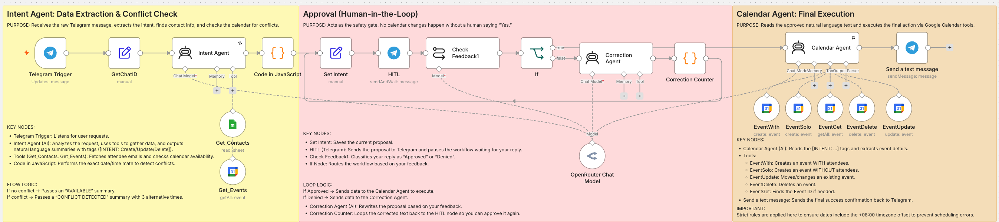
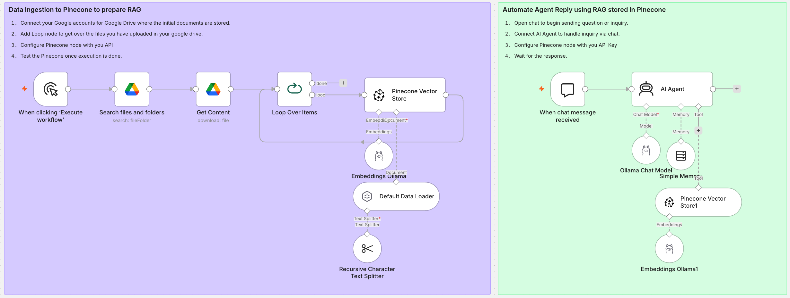

01
Align scope and requirements
Translate business needs into clear requirements, use cases, plans, and delivery expectations.
I’m a Project Manager with 8+ years of experience delivering banking and technology initiatives—and hands-on experience building AI-powered automation workflows. I bring business, technical teams, vendors, and emerging AI tools together to turn ideas into practical solutions.
Project leadership · Banking technology · AI agents and RAG workflows
I connect business goals to practical execution, keeping scope, stakeholders, risks, and releases aligned throughout the project.
Translate business needs into clear requirements, use cases, plans, and delivery expectations.
Bring cross-functional teams, vendors, and stakeholders together across project phases.
Support QA, UAT, deployment, production readiness, and early-life stabilization.
Experience spanning project leadership, business analysis, digital banking, system integration, and service operations.
Lead projects through planning, development, testing, deployment, and production support using Hybrid Agile and Waterfall approaches.
Scope · schedule · risk · releaseDelivery experience across mobile banking channels, QR-enabled cash machines, ATM switching, and payment integrations.
Banking · channels · integrationTurn client input into functional requirements and use cases, aligning business, technical, vendor, and regulatory groups.
Requirements · vendors · governanceCoordinate QA, UAT, production readiness, release activity, service levels, and early-life support.
Dev · UAT · production · SLAHighlights from banking technology initiatives I managed across requirements, vendors, implementation, testing, and rollout.
Led the design and nationwide deployment of more than 150 QR-enabled cash machines for three banks, enabling secure withdrawals through mobile banking apps.
Delivered an EMV-compliant ATM switch infrastructure supporting On-Us, issuer, and acquirer transactions for two banking institutions.
A career built across technical operations, application ownership, business analysis, and project management.
WESERV Systems International, Inc. (Fujitsu Philippines)
BGC, Taguig
CARD MRI Information Technology
San Pablo City, Laguna
CARD MRI Information Technology
Recommendations can be added here as they become available and are approved for publication.
Reserved for a verified recommendation about project leadership, collaboration, or delivery.
Alongside my project management background, I have hands-on experience developing AI-powered automation and retrieval-augmented generation (RAG) workflows.
Developed an AI-powered automation system using Java, Python, and proprietary Chat-AI tools; the project received Bronze recognition in a company-wide DX Hackathon.
Java · Python · Chat-AI · Bronze awardDesigned a portfolio workflow that ingests Google Drive documents, stores embeddings in Pinecone, and connects an AI Agent with Ollama models to retrieve context for inquiry responses.
n8n · Google Drive · Pinecone · OllamaExamples of workflows I build with n8n, APIs, spreadsheets, AI services, and local tools.
An n8n workflow that uses Google Sheets to organize social post content and the Facebook API to automate publishing to a connected page.
n8n · Facebook API · Google SheetsAn end-to-end content workflow: AI generates a story, another AI step creates image prompts, ComfyUI generates visuals, local text-to-speech creates voiceover, then captions are added and the video is rendered.
AI content · ComfyUI · local TTS · captions · renderingAn advanced, self-correcting n8n AI agent that manages Google Calendar bookings via Telegram using natural language, combining LLM intelligence with a strict Human-in-the-Loop safety net.

Analyzes chat inputs, extracts dates/attendees, and mathematically checks the calendar for scheduling conflicts before proposing alternatives.
Ollama · Code Nodes · APIPauses execution to request human approval via Telegram. Includes a self-correction loop that reads feedback and rewrites the proposal if denied.
Telegram · Approval Flow · LoopOnce approved, a dedicated agent handles the final API execution (Create, Update, Delete) with strict timezone offset formatting to prevent errors.
Google Calendar · Execution AgentA secure, two-stage Retrieval-Augmented Generation system that ingests private documents from Google Drive, embeds them into a Vector Database, and allows a private AI Agent to answer questions based on the ingested knowledge.

Automates the fetching of files from Google Drive, chunks the text using a Recursive Splitter, and upserts embeddings into a Pinecone Vector Store.
Google Drive · Pinecone · Text Splitter